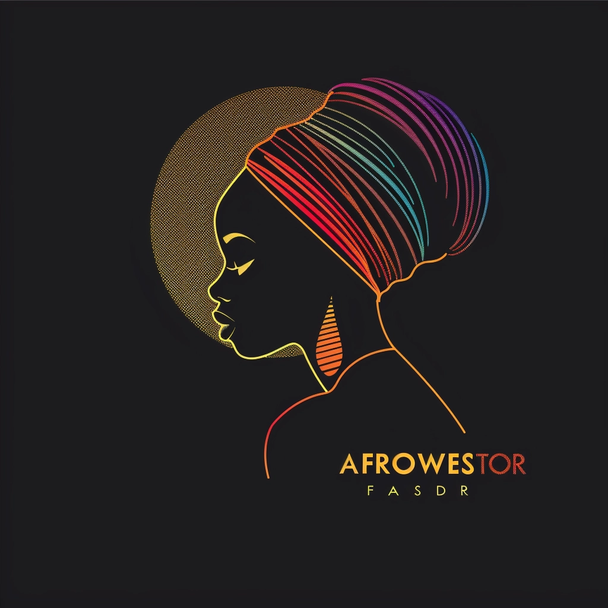
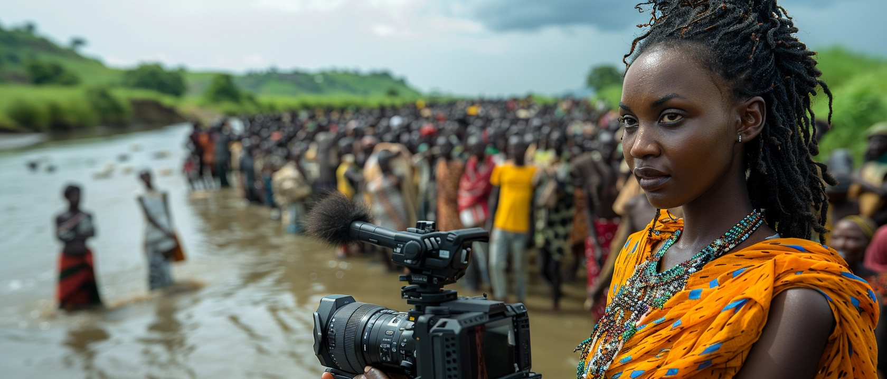
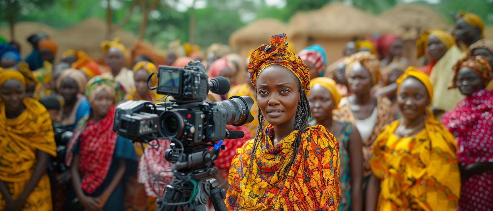
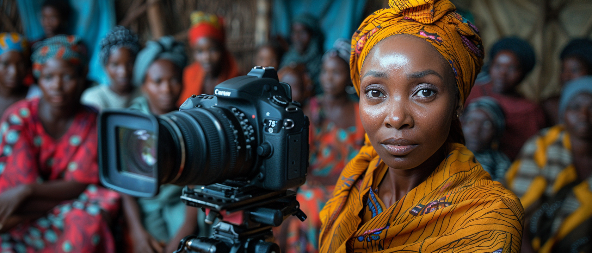

Traveling wedding and elopement photographer + videographer...
PHOTOGRAPHER + CINEMATOGRAPHER
Traveling wedding and elopement photographer + videographer...
HEY, I'M NASIF ...
...a photographer and cinematographer from Amsterdam Netherlands.
A little bit about my story – when I was 9, my mom bought me a little point-and-shoot film camera...
My desire isn’t simply to document scenes but to tell real stories. Let’s create something meaningful together!

About
My Journey Through the Lens
For over 20 years, I’ve been chasing light, framing moments, and capturing emotions — not just with a camera, but with my whole heart.
It began with a borrowed camcorder in the early 2000s, filming birthday parties and school plays in my neighborhood. What started as curiosity became an obsession: I wanted to freeze time, tell stories, and relive memories — not just for me, but for others.
I studied both the technical and emotional sides of photography and filmmaking — how light shapes a mood, how sound enhances memory, and how timing transforms ordinary into unforgettable.
As the years passed, I worked across styles and industries:
Weddings that brought tears and joy in equal measure
Corporate films that gave brands a soul
Documentaries that gave voice to unheard stories
Portraits that revealed raw, unfiltered beauty
Travel films that turned movement into poetry
What kept me going? Not just passion — but people. Every face I frame, every hand-held shot I take, every sound I capture — it's all about the connection. Real moments. Real stories.
Technology has changed. Cameras got sharper. Drones got lighter. But the purpose never changed: to make people feel something real.
Today, I bring decades of craft, intuition, and experience to every shoot. Whether it's a wedding in the mountains, a brand campaign in the city, or a quiet family moment in a backyard — I’m not just there to record. I’m there to see, to listen, and to tell your story like it matters — because it does.
.
My Visual Portfolio
A curated collection of moments, stories, and scenes captured through my lens — from timeless portraits and cinematic weddings to commercial visuals and artistic storytelling.
Photography – €250
Includes 500 photos + 100 retouched
Book Photography
Videography – €450
Includes shoot + trailer + HD film
Book Videography
I believe in collaboration, communication, and creativity. From pre-production to final edit, I work closely with every client to understand their vision, adapt to their style, and deliver visuals that exceed expectations.
Whether it’s a wedding, commercial, or documentary, every shoot is a story — and I’m here to tell it with purpose, precision, and personality.
After 20+ years of capturing weddings, portraits, brands, and wild landscapes, one thing has never changed — the power of real connection.
As a photographer and cinematographer, I’ve learned that the most unforgettable visuals don’t come from perfect lighting or fancy gear — they come from trust. When people feel seen, safe, and understood, that’s when the magic happens. Whether it's a couple in the mountains or a CEO in a studio, I aim to bring out the soul of the moment.
This blog is a space where I share the stories behind the lens — what went into the shots, what we laughed about during the shoot, and how the final vision came together. It’s also where I drop insights on storytelling, gear, and creative process.
Welcome behind the scenes of AFROWESTOR. You’re not just looking at photos and videos — you're stepping into a journey.
More from AFROWESTOR
“Working with AFROWESTOR was a dream. The photos captured our love perfectly — timeless, cinematic, and real.”
“Professional, creative, and reliable. I’d hire Nasif again in a heartbeat.”
Behind the Scenes
Raw moments from the road, on set, and in the edit studio.



Contact
Let’s create something meaningful together. Fill out the form below and I’ll get back to you soon.


{kind=link}
{kind=link}
{kind=link}
{kind=link}
{kind=link}
{kind=link}